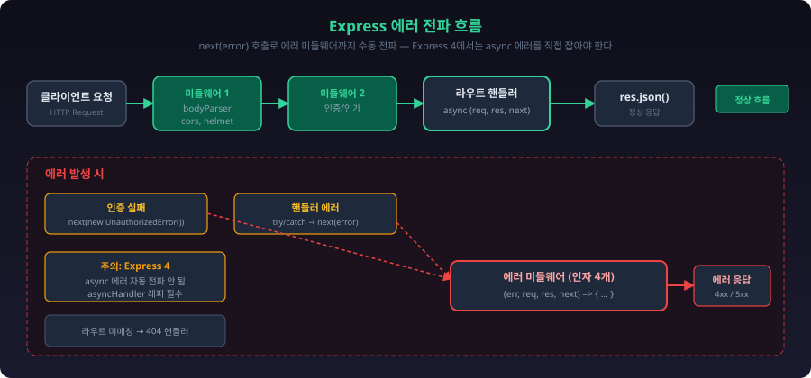
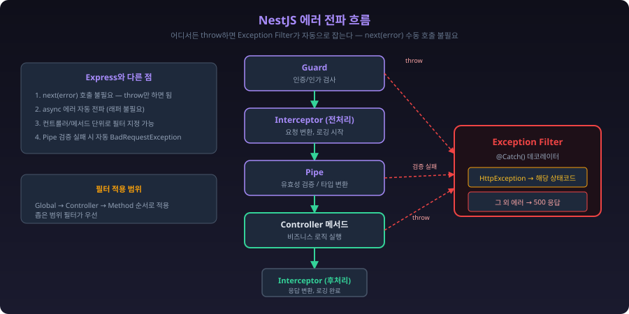
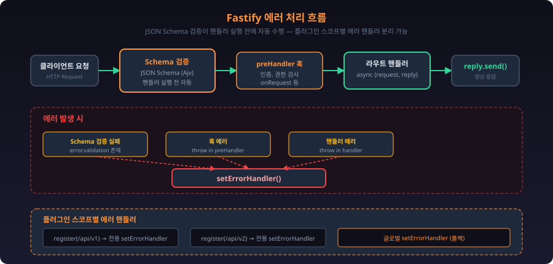
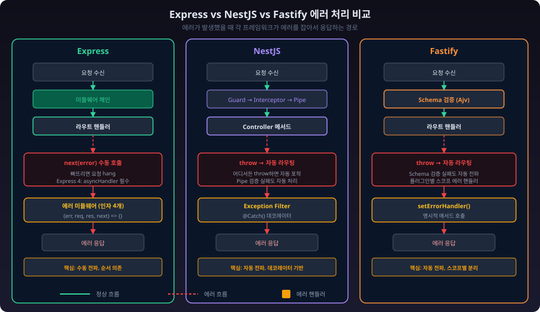

Node.js 에러 처리¶
개요¶
Node.js에서 에러 처리를 제대로 안 하면 프로세스가 죽는다. 잡히지 않은 에러 하나가 서버 전체를 내리고, 잘못된 에러 핸들링은 내부 정보를 클라이언트에 노출시킨다.
에러 처리에서 신경 써야 하는 것:
- 프로세스가 죽지 않게 한다
- 클라이언트에 적절한 응답을 돌려준다
- 디버깅할 수 있는 로그를 남긴다
- 민감한 정보를 응답에 포함하지 않는다
에러 분류¶
Node.js 에러는 크게 두 종류다.
| 유형 | 예시 | 복구 가능 | 처리 방법 |
|---|---|---|---|
| Operational (운영 에러) | DB 연결 실패, 타임아웃, 400 에러 | O | try/catch, 재시도 |
| Programmer (프로그래밍 에러) | TypeError, null 참조, 잘못된 인자 | X | 코드 수정 |
아래 다이어그램으로 보면 구조가 잡힌다.
graph TD
A["Node.js 에러"] --> B["Operational Error<br/>(운영 에러)"]
A --> C["Programmer Error<br/>(프로그래밍 에러)"]
B --> B1["네트워크/인프라"]
B --> B2["클라이언트 입력"]
B --> B3["외부 서비스"]
B1 --> B1a["DB 연결 실패<br/>ECONNREFUSED"]
B1 --> B1b["요청 타임아웃<br/>ETIMEDOUT"]
B1 --> B1c["디스크 풀<br/>ENOSPC"]
B2 --> B2a["잘못된 JSON"]
B2 --> B2b["필수 필드 누락"]
B2 --> B2c["권한 없음"]
B3 --> B3a["외부 API 5xx"]
B3 --> B3b["응답 파싱 실패"]
C --> C1["타입 에러"]
C --> C2["로직 에러"]
C --> C3["참조 에러"]
C1 --> C1a["TypeError:<br/>Cannot read property of null"]
C2 --> C2a["잘못된 배열 인덱스<br/>off-by-one"]
C3 --> C3a["ReferenceError:<br/>미선언 변수 접근"]
style A fill:#34495e,color:#fff
style B fill:#27ae60,color:#fff
style C fill:#c0392b,color:#fff
style B1 fill:#2ecc71,color:#fff
style B2 fill:#2ecc71,color:#fff
style B3 fill:#2ecc71,color:#fff
style C1 fill:#e74c3c,color:#fff
style C2 fill:#e74c3c,color:#fff
style C3 fill:#e74c3c,color:#fff이 둘을 구분하는 게 중요하다. Operational 에러는 catch해서 처리하면 되지만, Programmer 에러를 catch로 무시하면 버그가 숨어버린다.
// Operational Error: 예상 가능, 복구 가능
try {
await db.query('SELECT * FROM users');
} catch (error) {
if (error.code === 'ECONNREFUSED') {
// DB 연결 실패 → 재시도 또는 폴백
return getCachedData();
}
throw error;
}
// Programmer Error: 예상 불가, 코드 수정 필요
const user = null;
user.name; // TypeError: Cannot read property 'name' of null
// → 이건 catch로 잡을 게 아니라 코드를 고쳐야 한다
커스텀 에러 클래스¶
운영 에러와 프로그래밍 에러를 구분하려면 isOperational 플래그를 쓴다. 이걸 기준으로 글로벌 핸들러에서 처리 방식을 나눈다. 커스텀 에러 클래스의 상속 구조는 다음과 같다.
classDiagram
class Error {
+string message
+string stack
+string name
}
class AppError {
+number statusCode
+string errorCode
+boolean isOperational = true
}
class NotFoundError {
+statusCode = 404
+errorCode = "NOT_FOUND"
}
class ValidationError {
+statusCode = 400
+errorCode = "VALIDATION_ERROR"
+object[] errors
}
class UnauthorizedError {
+statusCode = 401
+errorCode = "UNAUTHORIZED"
}
class ConflictError {
+statusCode = 409
+errorCode = "CONFLICT"
}
Error <|-- AppError
AppError <|-- NotFoundError
AppError <|-- ValidationError
AppError <|-- UnauthorizedError
AppError <|-- ConflictErrorclass AppError extends Error {
constructor(message, statusCode, errorCode) {
super(message);
this.name = this.constructor.name;
this.statusCode = statusCode;
this.errorCode = errorCode;
this.isOperational = true;
Error.captureStackTrace(this, this.constructor);
}
}
class NotFoundError extends AppError {
constructor(resource, id) {
super(`${resource} with id ${id} not found`, 404, 'NOT_FOUND');
}
}
class ValidationError extends AppError {
constructor(errors) {
super('Validation failed', 400, 'VALIDATION_ERROR');
this.errors = errors;
}
}
class UnauthorizedError extends AppError {
constructor(message = 'Authentication required') {
super(message, 401, 'UNAUTHORIZED');
}
}
class ConflictError extends AppError {
constructor(message) {
super(message, 409, 'CONFLICT');
}
}
Express 에러 처리¶
에러 전파 흐름¶
Express에서 에러가 어떻게 흘러가는지 이해하는 게 먼저다. next(error)를 호출하면 일반 미들웨어를 전부 건너뛰고, 파라미터 4개짜리 에러 미들웨어로 직접 넘어간다.

flowchart TD
A[클라이언트 요청] --> B[미들웨어 1: bodyParser 등]
B --> C[미들웨어 2: 인증 등]
C --> D[라우트 핸들러]
D -- "정상 응답" --> E[res.json 으로 응답]
D -- "에러 발생" --> F["next(error) 호출"]
C -- "인증 실패" --> F
F --> G{에러 미들웨어}
G -- "isOperational = true" --> H["상태코드 + 에러 메시지 응답<br/>(400, 404, 409 등)"]
G -- "isOperational = false" --> I["500 응답 + 에러 로그 기록<br/>(내부 정보 숨김)"]
J["어떤 라우트에도 안 걸림"] --> K["404 핸들러"]
style F fill:#e74c3c,color:#fff
style G fill:#f39c12,color:#fff
style H fill:#2ecc71,color:#fff
style I fill:#e74c3c,color:#fff핵심은 next(error)다. Express에서 async 함수의 에러는 자동으로 next에 전달되지 않는다. 직접 try/catch로 잡아서 next(error)를 호출하거나, 래퍼 함수를 써야 한다.
라우트 에러 처리¶
// 문제: 에러 발생 시 응답 없이 행(hang)
app.get('/users/:id', async (req, res) => {
const user = await userService.findById(req.params.id);
res.json(user);
});
// try/catch로 직접 잡기
app.get('/users/:id', async (req, res, next) => {
try {
const user = await userService.findById(req.params.id);
if (!user) throw new NotFoundError('User', req.params.id);
res.json(user);
} catch (error) {
next(error); // 에러 미들웨어로 전달
}
});
// 래퍼 함수로 자동화 — 매번 try/catch 안 써도 된다
const asyncHandler = (fn) => (req, res, next) => {
Promise.resolve(fn(req, res, next)).catch(next);
};
app.get('/users/:id', asyncHandler(async (req, res) => {
const user = await userService.findById(req.params.id);
if (!user) throw new NotFoundError('User', req.params.id);
res.json(user);
}));
Express 5부터는 async 함수에서 throw한 에러가 자동으로 next에 전달된다. Express 4를 쓰고 있다면 asyncHandler는 필수다.
글로벌 에러 미들웨어¶
파라미터가 4개여야 Express가 에러 미들웨어로 인식한다. 3개면 일반 미들웨어로 취급되므로 주의해야 한다.
app.use((err, req, res, next) => {
// 운영 에러 (예상된 에러)
if (err.isOperational) {
return res.status(err.statusCode).json({
status: 'error',
code: err.errorCode,
message: err.message,
...(err.errors && { errors: err.errors }),
});
}
// 프로그래밍 에러 (예상치 못한 에러)
console.error('UNEXPECTED ERROR:', err);
res.status(500).json({
status: 'error',
code: 'INTERNAL_ERROR',
message: 'Something went wrong',
// 프로덕션에서 스택 트레이스 노출하면 안 된다
...(process.env.NODE_ENV === 'development' && { stack: err.stack }),
});
});
404 핸들러¶
모든 라우트 정의 이후, 에러 미들웨어 이전에 등록한다.
app.use((req, res) => {
res.status(404).json({
status: 'error',
code: 'NOT_FOUND',
message: `Route ${req.method} ${req.path} not found`,
});
});
NestJS 에러 처리¶
에러 전파 흐름¶
NestJS는 Express와 구조가 다르다. Guard, Interceptor, Pipe를 거치면서 에러가 발생할 수 있고, 최종적으로 Exception Filter가 모든 에러를 잡는다.

flowchart TD
A[클라이언트 요청] --> B[Guard: 인증/인가]
B -- "인가 실패" --> G
B -- "통과" --> C[Interceptor: 요청 전처리]
C --> D[Pipe: 유효성 검증/변환]
D -- "유효성 실패" --> G
D -- "통과" --> E[Controller 메서드]
E -- "정상" --> F[Interceptor: 응답 후처리]
F --> H[클라이언트 응답]
E -- "에러 throw" --> G
G[Exception Filter]
G -- "HttpException" --> I["해당 상태코드 + 메시지 응답"]
G -- "그 외 에러" --> J["500 응답 + 로그 기록"]
style G fill:#f39c12,color:#fff
style I fill:#2ecc71,color:#fff
style J fill:#e74c3c,color:#fffExpress와 달리 next(error) 같은 걸 직접 호출할 필요 없다. 컨트롤러에서 throw하면 NestJS가 알아서 Exception Filter로 라우팅한다. Pipe에서 유효성 검증 실패하면 자동으로 BadRequestException이 발생한다.
글로벌 예외 필터¶
@Catch()
export class GlobalExceptionFilter implements ExceptionFilter {
private readonly logger = new Logger(GlobalExceptionFilter.name);
catch(exception: unknown, host: ArgumentsHost) {
const ctx = host.switchToHttp();
const response = ctx.getResponse();
const request = ctx.getRequest();
let status = 500;
let message = 'Internal server error';
let code = 'INTERNAL_ERROR';
if (exception instanceof HttpException) {
status = exception.getStatus();
const res = exception.getResponse();
message = typeof res === 'string' ? res : (res as any).message;
code = (res as any).code || 'HTTP_ERROR';
}
// 500 에러만 상세 로그를 남긴다
if (status >= 500) {
this.logger.error(`${request.method} ${request.url}`, exception);
}
response.status(status).json({
status: 'error',
code,
message,
timestamp: new Date().toISOString(),
path: request.url,
});
}
}
// main.ts에서 등록
app.useGlobalFilters(new GlobalExceptionFilter());
내장 예외 클래스¶
NestJS는 HTTP 상태코드별 예외 클래스를 제공한다. 커스텀 에러 클래스를 만들 필요 없이 바로 쓸 수 있다.
throw new NotFoundException('User not found');
throw new BadRequestException('Invalid input');
throw new UnauthorizedException('Token expired');
throw new ForbiddenException('Access denied');
throw new ConflictException('Email already exists');
Fastify 에러 처리¶
Fastify는 Express, NestJS와 에러 처리 방식이 다르다. 자체 에러 핸들링 메커니즘이 있고, JSON Schema 기반 유효성 검증이 내장되어 있다.

setErrorHandler¶
Fastify의 글로벌 에러 핸들러는 setErrorHandler로 등록한다. Express처럼 미들웨어 순서에 의존하지 않는다.
const fastify = require('fastify')({ logger: true });
fastify.setErrorHandler((error, request, reply) => {
// Fastify 유효성 검증 에러
if (error.validation) {
return reply.status(400).send({
status: 'error',
code: 'VALIDATION_ERROR',
message: 'Request validation failed',
errors: error.validation.map(v => ({
field: v.instancePath || v.params?.missingProperty,
message: v.message,
})),
});
}
// 커스텀 운영 에러
if (error.isOperational) {
return reply.status(error.statusCode).send({
status: 'error',
code: error.errorCode,
message: error.message,
});
}
// 예상치 못한 에러
request.log.error(error);
reply.status(500).send({
status: 'error',
code: 'INTERNAL_ERROR',
message: 'Something went wrong',
});
});
Express와 비교하면:
- Express:
app.use((err, req, res, next) => {})— 파라미터 4개 미들웨어 - Fastify:
fastify.setErrorHandler((error, request, reply) => {})— 명시적 메서드
Fastify는 next가 없다. 에러 핸들러 안에서 reply.send()로 바로 응답한다.
Schema Validation Error¶
Fastify는 라우트 정의 시 JSON Schema로 요청/응답을 검증한다. 스키마에 맞지 않으면 라우트 핸들러가 실행되기 전에 자동으로 400 에러가 발생한다.
fastify.post('/users', {
schema: {
body: {
type: 'object',
required: ['email', 'name'],
properties: {
email: { type: 'string', format: 'email' },
name: { type: 'string', minLength: 2 },
age: { type: 'integer', minimum: 0 },
},
additionalProperties: false,
},
},
}, async (request, reply) => {
// 여기 도달했으면 body 유효성 검증은 이미 통과한 상태
const user = await createUser(request.body);
reply.status(201).send(user);
});
스키마 검증 실패 시 Fastify가 자동으로 보내는 기본 응답:
{
"statusCode": 400,
"error": "Bad Request",
"message": "body must have required property 'email'"
}
이 기본 응답 형식을 바꾸려면 setErrorHandler에서 error.validation을 체크해서 커스텀 응답을 만든다 (위 setErrorHandler 예제 참고).
schemaErrorFormatter¶
에러 메시지 형식만 바꾸고 싶으면 schemaErrorFormatter를 쓴다.
const fastify = require('fastify')({
schemaErrorFormatter: (errors, dataVar) => {
const message = errors.map(e => {
const field = e.instancePath
? e.instancePath.replace('/', '')
: e.params?.missingProperty;
return `${field}: ${e.message}`;
}).join(', ');
const error = new Error(message);
error.statusCode = 400;
return error;
},
});
플러그인 스코프별 에러 핸들러¶
Fastify는 플러그인 단위로 에러 핸들러를 분리할 수 있다. 특정 라우트 그룹에만 다른 에러 처리 로직을 적용할 때 쓴다.
// /api/v1 하위 라우트에만 적용되는 에러 핸들러
fastify.register(async (instance) => {
instance.setErrorHandler((error, request, reply) => {
// v1 API 전용 에러 형식
reply.status(error.statusCode || 500).send({
api_version: 'v1',
error: error.message,
});
});
instance.get('/users', async () => { /* ... */ });
instance.get('/orders', async () => { /* ... */ });
}, { prefix: '/api/v1' });
Express에서 이걸 하려면 Router 단위로 에러 미들웨어를 분리해야 하는데, 미들웨어 순서를 잘못 잡으면 에러가 글로벌 핸들러로 빠지는 경우가 있다. Fastify는 플러그인 캡슐화 덕분에 이런 문제가 없다.
세 프레임워크 에러 처리 비교¶
에러가 발생했을 때 각 프레임워크가 어떤 경로로 에러를 처리하는지 한눈에 비교한 다이어그램이다.

flowchart LR
subgraph Express["Express"]
direction TB
E1["요청"] --> E2["미들웨어 체인"]
E2 --> E3["라우트 핸들러"]
E3 -- "에러 발생" --> E4["next(error) 수동 호출"]
E4 --> E5["에러 미들웨어<br/>(파라미터 4개)"]
E5 --> E6["응답"]
style E4 fill:#e74c3c,color:#fff
style E5 fill:#f39c12,color:#fff
end
subgraph NestJS["NestJS"]
direction TB
N1["요청"] --> N2["Guard"]
N2 --> N3["Interceptor"]
N3 --> N4["Pipe"]
N4 --> N5["Controller"]
N5 -- "throw" --> N6["Exception Filter<br/>(자동 라우팅)"]
N4 -- "검증 실패" --> N6
N2 -- "인가 실패" --> N6
N6 --> N7["응답"]
style N6 fill:#f39c12,color:#fff
end
subgraph Fastify["Fastify"]
direction TB
F1["요청"] --> F2["Schema 검증"]
F2 -- "검증 실패" --> F5["setErrorHandler<br/>(자동 라우팅)"]
F2 -- "통과" --> F3["preHandler 훅"]
F3 --> F4["라우트 핸들러"]
F4 -- "throw" --> F5
F5 --> F6["응답"]
style F5 fill:#f39c12,color:#fff
end세 프레임워크의 핵심 차이:
- Express:
next(error)를 직접 호출해야 에러가 전파된다. 호출 안 하면 요청이 행(hang) 걸린다. - NestJS: Guard, Interceptor, Pipe, Controller 어디서든 throw하면 Exception Filter가 자동으로 잡는다.
- Fastify: Schema 검증이 핸들러 실행 전에 자동으로 돌아간다. throw하면
setErrorHandler가 바로 받는다.
| 항목 | Express | NestJS | Fastify |
|---|---|---|---|
| 에러 핸들러 등록 | app.use((err, req, res, next) => {}) |
@Catch() 데코레이터 + Exception Filter |
setErrorHandler() |
| async 에러 자동 전파 | v4: X (래퍼 필요), v5: O | O (기본 지원) | O (기본 지원) |
| 유효성 검증 | 별도 라이브러리 필요 (joi, zod 등) | class-validator + Pipe | JSON Schema 내장 |
| 스코프별 에러 핸들링 | Router 단위 (순서 주의) | 컨트롤러/메서드 단위 필터 | 플러그인 스코프 (캡슐화) |
| 에러 전파 방식 | next(error) 수동 호출 |
throw → Exception Filter 자동 라우팅 | throw → setErrorHandler 자동 라우팅 |
프로세스 레벨 에러¶
프레임워크와 무관하게, Node.js 프로세스 자체에서 잡아야 하는 에러들이 있다.
// 잡히지 않은 Promise 거부
process.on('unhandledRejection', (reason, promise) => {
console.error('Unhandled Rejection:', reason);
// 로그 기록 후 프로세스 종료 (PM2가 재시작)
process.exit(1);
});
// 잡히지 않은 예외
process.on('uncaughtException', (error) => {
console.error('Uncaught Exception:', error);
// 진행 중인 요청 완료 후 종료 (graceful shutdown)
server.close(() => {
process.exit(1);
});
// 10초 내 종료 안 되면 강제 종료
setTimeout(() => process.exit(1), 10000);
});
// SIGTERM (컨테이너 종료 시그널)
process.on('SIGTERM', () => {
console.log('SIGTERM received. Graceful shutdown...');
server.close(() => {
db.disconnect();
process.exit(0);
});
});
unhandledRejection과 uncaughtException은 다르다. unhandledRejection은 .catch() 없는 Promise에서 발생하고, uncaughtException은 동기 코드에서 throw된 에러가 아무 try/catch에도 안 잡혔을 때 발생한다. Node.js 15부터 unhandledRejection도 기본적으로 프로세스를 종료시킨다.
에러 응답 표준 형식¶
{
"status": "error",
"code": "VALIDATION_ERROR",
"message": "Validation failed",
"errors": [
{
"field": "email",
"message": "Invalid email format"
},
{
"field": "age",
"message": "Must be at least 18"
}
],
"timestamp": "2026-03-01T10:15:30.000Z",
"path": "/api/users",
"requestId": "req-abc123"
}
에러 로깅¶
const logger = require('pino')();
app.use((err, req, res, next) => {
logger.error({
err: {
message: err.message,
code: err.errorCode,
stack: err.stack,
},
request: {
method: req.method,
url: req.url,
headers: {
'user-agent': req.headers['user-agent'],
},
body: req.body,
userId: req.user?.id,
},
responseTime: Date.now() - req.startTime,
}, 'Request error');
// ... 응답 처리
});
외부 서비스 에러 처리¶
외부 API를 호출할 때는 타임아웃과 재시도를 반드시 넣어야 한다. 외부 서비스가 느려지면 내 서버의 커넥션이 쌓여서 같이 죽는다.
class ExternalServiceClient {
constructor(baseUrl, options = {}) {
this.baseUrl = baseUrl;
this.maxRetries = options.maxRetries || 3;
this.timeout = options.timeout || 5000;
}
async request(path, options = {}) {
let lastError;
for (let attempt = 1; attempt <= this.maxRetries; attempt++) {
try {
const controller = new AbortController();
const timeoutId = setTimeout(
() => controller.abort(),
this.timeout
);
const response = await fetch(`${this.baseUrl}${path}`, {
...options,
signal: controller.signal,
});
clearTimeout(timeoutId);
if (!response.ok) {
throw new AppError(
`External service error: ${response.status}`,
502,
'EXTERNAL_SERVICE_ERROR'
);
}
return response.json();
} catch (error) {
lastError = error;
if (attempt < this.maxRetries) {
// exponential backoff
await new Promise(r =>
setTimeout(r, 1000 * Math.pow(2, attempt - 1))
);
}
}
}
throw lastError;
}
}
참고¶
관련 문서